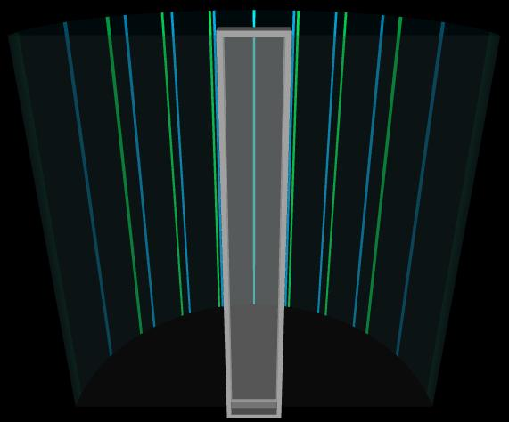
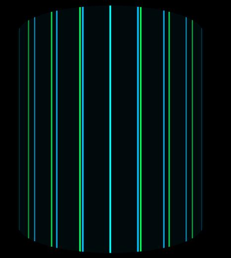
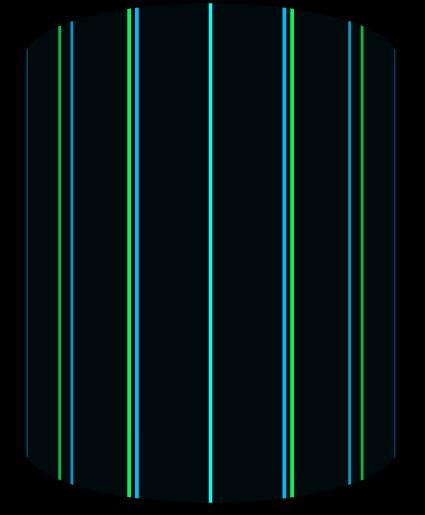
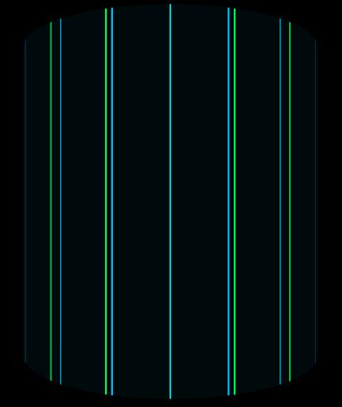
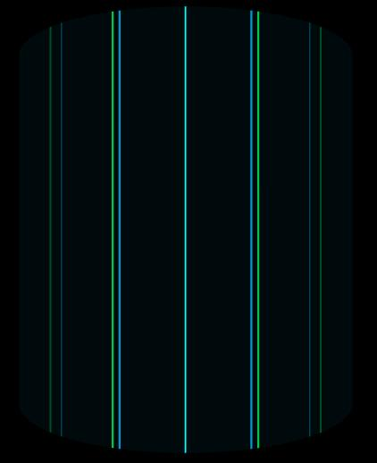
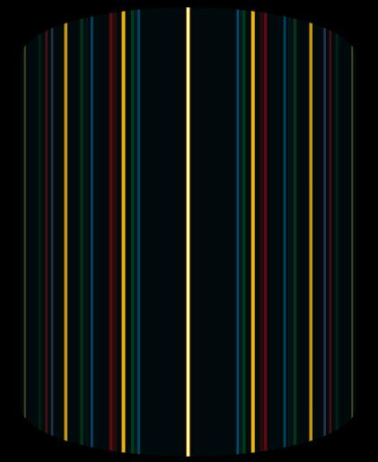
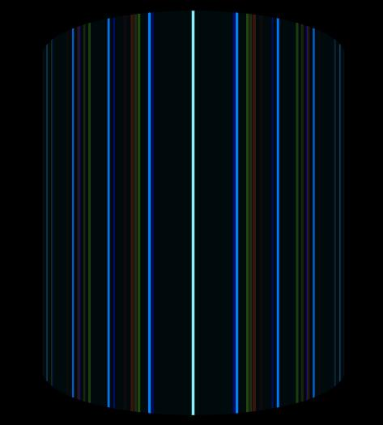
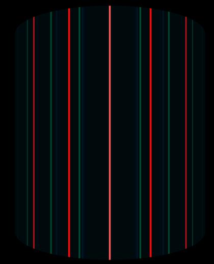
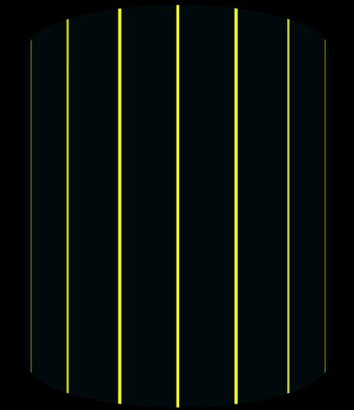

Definitions
N = number of grooves
w = width of a groove
d = distance between consecutive grooves
λ = wavelength in vacuum of incident light

Image 1
N = 50, w = 0.100 microns, d = 2.00 microns, λ1 = 450 mm,
To download the high resolution image, copy the following link into your

Image 2
Same parameter values as Image 1. The scene has been rotated by 180 degrees
To download the high resolution image, copy the following link into your

Image 3
The same parameter values as Image 2, except that d = 1.50 microns.
To download the high resolution image, copy the following link into your

Image 4
The same parameter values as Image 3, except that N = 100.
To download the high resolution image, copy the following link into your

Image 5
The same parameter values as Image 4, except that W = 0.400 microns
To download the high resolution image, copy the following link into your

Image 6
The same parameter values as Image 1, except that Source = Helium lamp.
To download the high resolution image, copy the following link into your

Image 7
The same parameter values as Image 1, except that Source = mercury lamp.
To download the high resolution image, copy the following link into your

Image 8
The same parameter values as Image 1, except that Source = Hydrogen lamp.
To download the high resolution image, copy the following link into your

Image 9
The same parameter values as Image 1, except that Source = Sodium lamp.
To download the high resolution image, copy the following link into your